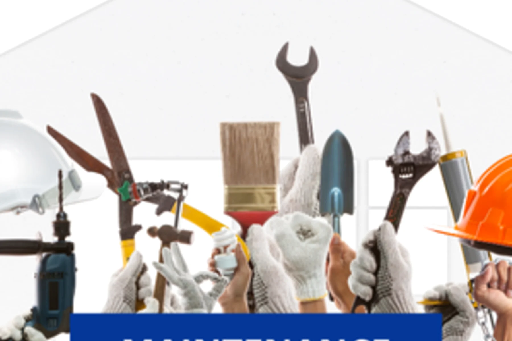

Property maintenance
Repairs, upkeep, inspections and preventative support for buildings that need steady attention.
Barco Solutions
A polished version of the live Barco Solutions site: maintenance, hygiene, cleaning, repairs and facility support for homes, commercial sites and managed property environments.
Who we are
Barco Solutions positions itself as an all-in-one property care partner. The site now keeps the live-site direction, but presents it with a more refined, premium and conversion-focused flow.
Instead of page-builder blocks, the new design gives visitors a sharp overview of divisions, services, proof, and the fastest way to start a project conversation.
Repairs, upkeep, inspections and preventative support for buildings that need steady attention.
Professional cleaning and hygiene support for commercial, office, residential and shared-use spaces.
Reliable operational help for property managers, businesses and households that need one point of contact.
Our solutions
Live-site service ideas, cleaned up into a stronger sales structure with better hierarchy and more confidence.
Maintenance requests, inspections, repairs and day-to-day support for properties that need quick coordination.
Practical upkeep, preventative maintenance and improvement work across commercial and private spaces.
Cleaning and hygiene services that help spaces feel professional, healthy and ready for daily use.
Extra capability for larger or more specific property requirements where coordination matters.
Trusted environments
Project work
The available Barco imagery is now treated like a proper portfolio: larger, cleaner, and more editorial. These can later become detailed case studies when project notes are ready.

How it works
Project type, location, photos, urgency and whether it is residential or commercial.
Barco can assess the service mix, timing, access needs and best first action.
The work is planned, communicated and handled with a practical property-care mindset.
Contact us
The demo keeps the existing SmartSite AI contact flow, but presents it as a premium first-touch assistant instead of a bolt-on widget.